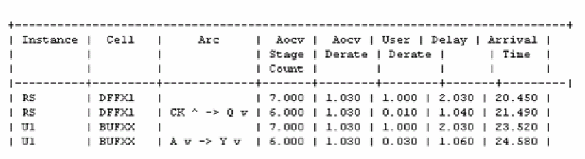
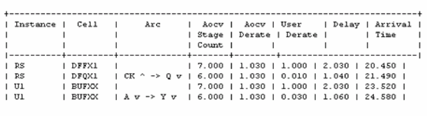
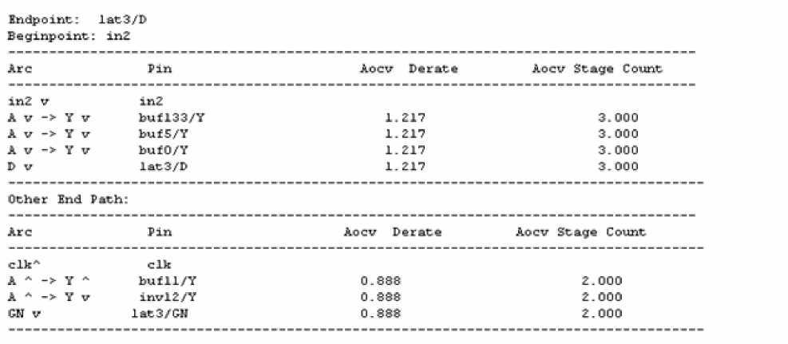

Reporting with OCV/AOCV Derating
In a timing report there may be a combination of OCV and AOCV derating factors - aocv_derate and user_derate (OCV) fields of the report. An additional stage_count field is available to aid in better understanding the derivation of the aocv_derate factor.
In the previous example of an additive combination of OCV and AOCV, one of the reference points was 0 and the other was 1. In such cases, the software does not make any adjustments to normalize the final derate factor so the timing report columns are quite intuitive.
In the timing run below, the nominal delay for all arcs has been set to 1.0ns so that the value in the Delay field indicates the total derate factor applied.
set_global report_timing_format {instance cell arc stage_count aocv_derate user_derate delay arrival}

If the derating factors are changed such that both AOCV and OCV are referenced to 1.0, then an implicit -1 will be used since the mode is still aocv_additive. In this case, the effect of the ‘-1’ will be seen in the aocv_derate value.
For example, set both the reference points to 0, and modify the AOCV library so that it outputs a value of 0.030ns.
set_global timing_derate_aocv_reference_point 0
set_timing_derate -delay_corner dcMax -late -cell_delay 1.01
set_timing_derate -delay_corner dcMax -late -cell_delay 0.02 -add [get_cells U1]

In this case, the +1.0 adjustment to normalize the final derating factor is again accounted for in the aocv_derate column.
AOCV Derate and Stage Count Properties of Timing Arcs
You can use stage count and AOCV derate properties to report and query on AOCV data. As an example consider the following path:
report_timing -format {arc hpin aocv_derate stage_count} –path_type full_clock

For example, obtaining the various stage counts corresponding to the above path is shown below:
get_property [get_arcs –from buf133/A –to buf133/Y] aocv_stage_count_data_late 3.000
get_property [get_arcs –from buf11/A –to buf11/Y] aocv_stage_count_capture_clock_early
To obtain derate corresponding to the above path:
get_property [get_arcs –from buf11/A –to buf11/Y] aocv_derate_capture_clock_early_rise 0.888
For more information on AOCV derate properties, refer to report_property and get_property commands in the Tempus Text Command Reference.
Return to top